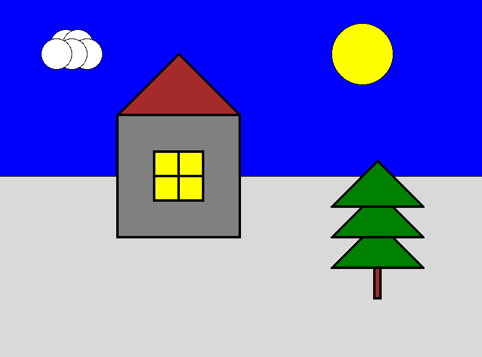
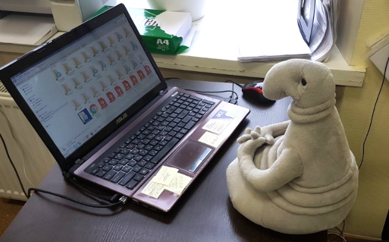

Практика: графические примитивы
Введение
На этом занятии вы будете рисовать графические объекты на языке Python.
Благодаря Джону Зелле у нас есть вспомогательная библиотека графики (graphics.py), с помощью которой мы будем отображать примитивные объекты на экране.
Установка и подключение библиотеки
Нужно скачать файл и положить в ту (именно в ту) директорию, где вы собираетесь далее писать свои программы.
Чтобы импортировать возможности библиотеки graphics в вашей программе нужно вставить:
import graphics as gr
Теперь все объекты этой библиотеки будут вызываться через точку: gr.КакойНибудьОбъект().
Графическое окно — это место, где будут размещаться графические примитивы:
# подключение библиотеки под синонимом gr
import graphics as gr
# Инициализация окна с названием "Russian game" и размером 100х100 пикселей
window = gr.GraphWin("Russian game", 100, 100)
# Закрытие окна после завершения работы с графикой
window.close()
Создание графических примитивов:
# Создание круга с радиусом 10 и координатами центра (50, 50)
my_circle = gr.Circle(gr.Point(50, 50), 10)
# Создание отрезка с концами в точках (2, 4) и (4, 8)
my_line = gr.Line(gr.Point(2, 4), gr.Point(4, 8))
# Создание прямоугольника у которого диагональ — отрезок с концами в точках (2, 4) и (4, 8)
my_rectangle = gr.Rectangle(gr.Point(2, 4), gr.Point(4, 8))
Отрисовка примитива в графическом окне производится отдельной командой:
# Отрисовка примитивов в окне window
my_circle.draw(window)
my_line.draw(window)
my_rectangle.draw(window)
Скрипт выполнится крайне быстро и мы не успеем увидеть результаты нашего труда. Чтобы это исправить, стоит поставить выполнение скрипта на паузу:
# Ожидание нажатия кнопки мыши по окну.
window.getMouse()
# После того как мы выполнили все нужные операции, окно следует закрыть.
window.close()
Пример программы
Законченный пример:
import graphics as gr
window = gr.GraphWin("Jenkslex and Ganzz project", 400, 400)
face = gr.Circle(gr.Point(200, 200), 100)
face.setFill('yellow')
eye1 = gr.Circle(gr.Point(150, 180), 20)
eye2 = gr.Circle(gr.Point(250, 180), 15)
eye1_center = gr.Circle(gr.Point(150, 180), 8)
eye2_center = gr.Circle(gr.Point(250, 180), 7)
eye1.setFill('red')
eye2.setFill('red')
eye1_center.setFill('black')
eye2_center.setFill('black')
eyebrow1 = gr.Line(gr.Point(100, 120), gr.Point(180, 170))
eyebrow2 = gr.Line(gr.Point(220, 170), gr.Point(300, 140))
eyebrow1.setWidth(10)
eyebrow2.setWidth(10)
eyebrow1.setOutline('black')
eyebrow2.setOutline('black')
mouth = gr.Line(gr.Point(150, 260), gr.Point(250, 260))
mouth.setWidth(20)
mouth.setOutline('black')
face.draw(window)
eye1.draw(window)
eye2.draw(window)
eye1_center.draw(window)
eye2_center.draw(window)
eyebrow1.draw(window)
eyebrow2.draw(window)
mouth.draw(window)
window.getMouse()
window.close()
Скопируйте код в среду разработки, запустите и посмотрите на результат.
Документация
Для выполнения данной работы линий, прямоугольников и кругов вполне достаточно. Но если вы хотите узнать еще больше команд, то загляните в документацию библиотеки graphics.
Бесструктурное программирование
Самостоятельное задание №1. Пейзаж
Используя полученные знания, нарисуйте любую статическую сцену, которая содержит не менее 5 различных объектов, состоящих из пяти и более примитивов. Проявите свою творческую натуру, но не занимайтесь этим более 30 минут, ведь вашу сцену можно улучшать вечно, а наша задача немного в другом. Примером сцены может являться следующая картинка:
Сделайте это задание и дождитесь дальнейших указаний преподавателя.
Cтруктурное программирование
В предыдущем упражнении вы должны были почувствовать что такое "ковыряться в коде". Очень сложно охватить всю программу сразу, вместить её в сознание.
Пока объем вашего кода не достигает 100 строк, вы ещё можете ориентироваться в нём. Как только цифра возрастет на порядок, вы потеряетесь даже в своей собственной программе.
Теперь давайте изменим нашу программу так, чтобы она была разделена на логические независимые куски кода — функции.
Приведем пример простой программы, чтобы показать, как работают функции.
# Определение функции
def say_hello():
# Тело функции
print('Say hello to my little friend!')
# Вызов функции
say_hello()
Обратите внимание, что все входящие в тело функции операции должны быть с отступом в четыре пробела. А также на тот факт, что без вызова функции все операции, которые прописаны в теле функции, выполнены не будут.
Функции — мощный инструмент. Они позволяют организовать программу так, чтобы было удобно работать с её отдельными фрагментами по очереди. Идея в том, чтобы разделить наш код на независимые друг от друга по смыслу куски и каждому дать имя.
Именование функций
Выбор имён для функций — очень важная творческая часть работы программиста. Имя должно отражать содержание того, что делает функция.
Пример структурного программирования
import graphics as gr
window = gr.GraphWin("Jenkslex and Ganzz project", 400, 400)
def draw_left_eye():
eye = gr.Circle(gr.Point(150, 180), 20)
pupil = gr.Circle(gr.Point(150, 180), 10)
eye.setFill('red')
pupil.setFill('black')
eye.draw(window)
pupil.draw(window)
def draw_right_eye():
eye = gr.Circle(gr.Point(250, 180), 14)
pupil = gr.Circle(gr.Point(250, 180), 7)
eye.setFill('red')
pupil.setFill('black')
eye.draw(window)
pupil.draw(window)
def draw_eyebrows():
eyebrow1 = gr.Line(gr.Point(100, 120), gr.Point(180, 170))
eyebrow2 = gr.Line(gr.Point(220, 170), gr.Point(300, 120))
eyebrow1.setWidth(10)
eyebrow2.setWidth(10)
eyebrow1.setOutline('black')
eyebrow2.setOutline('black')
eyebrow1.draw(window)
eyebrow2.draw(window)
def draw_face():
face = gr.Circle(gr.Point(200, 200), 100)
face.setFill('yellow')
face.draw(window)
def draw_mouth():
mouth = gr.Line(gr.Point(150, 260), gr.Point(250, 260))
mouth.setWidth(20)
mouth.setOutline('black')
mouth.draw(window)
def draw_angry_lecturer():
draw_face()
draw_right_eye()
draw_right_eye()
draw_eyebrows()
draw_mouth()
draw_angry_lecturer()
window.getMouse()
window.close()
Как видите, функциональность программы не изменилась, но если вы увидете ее в первый раз, вы разберетесь с ней гораздо быстрее, чем если бы вы разбирались с первоначальным примером, написанным без использования функций.
Самостоятельное задание №2
Измените вашу сцену так, чтобы обьекты были нарисованы на пейзаже в других местах. Добавьте ещё два таких же облака, но так, чтобы все три облака выглядели естественно, не выстроившись в линейку.
Функции с параметрами
А теперь представьте, что в предыдущей самостоятельной работе вас попросили сделать не две копии, а сто?
Наивным решением будет написать сто почти одинаковых функций с измененными цифрами, но если мы вдруг внезапно захотим во всех этих обьектах убрать какой-либо примитив — нам придется залезть в каждую такую функцию и изменить соответствующие строчки. Такой подход нежизнеспособен.
Рациональным выходом из подобной ситуации будет являться использование функций с параметрами. В физике положение обьекта мы задавали с помощью координат, почему бы такой подход не распространить и на графические обьекты?
В примере, где демонстрируется рисование смайлика, у нас есть два глаза, код отрисовки которых почти ничем не отличается, кроме использования трех чисел: положения в пространстве и размер.
Продемонстрируем, как этот код можно оптимизировать.
def draw_eye(x, y, size):
eye = gr.Circle(gr.Point(x, y), size)
pupil = gr.Circle(gr.Point(x, y), size/2)
eye.setFill('red')
pupil.setFill('black')
eye.draw(window)
pupil.draw(window)
def draw_angry_lecturer():
draw_face()
draw_eye(150, 180, 20)
draw_eye(250, 180, 14)
draw_eyebrows()
draw_mouth()
Как видите теперь, если мы хотим изменить конструкцию обоих глаз одновременно, нам достаточно изменить код в одном месте, и это изменение распространиться на все обьекты, которые отрисовываются данной функцией.
Самостоятельное задание №3
Используя функции с параметрами оптимизируйте свой код, который отрисовывал два обьекта из предыдущего задания.
Если при разработке вы встречаетесь с ситуацией, когда в коде присутствуют две последовательности действий, которые отличаются совсем немного — лучше обощить их и написать одну общую функцию с параметрами, которая в зависимости от входных данных, будет решать разные задачи.
Это одна из самых важных вещей в программировании — разделять программу на модульные абстракции. Это не просто и на эту тему написано достаточно много книг, однако первый шаг в этом направлении вы уже сделали. По возможности старайтесь находить элегантные решения. Это поможет вам сэкономить уйму времени в будущем. Сайт построен с использованием Pelican. За основу оформления взята тема от Smashing Magazine. Исходные тексты программ, приведённые на этом сайте, распространяются под лицензией GPLv3, все остальные материалы сайта распространяются под лицензией CC-BY-SA.